Internal Model Control Design for a Chemical Reactor Plant
In process control applications, model-based control systems are often used to track setpoints and reject load disturbances. This example illustrates how to design a compensator in a IMC structure for series chemical reactors, using the IMC tuning feature available in SISO Design Tool.
Contents
Mathematical Models for the Series Chemical Reactors
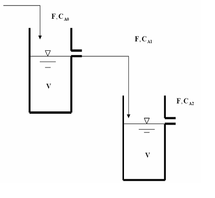
PLANT DESCRIPTION
The chemical reactor system, comprised of two well mixed tanks, is shown in the above figure. The reactors are isothermal and the reaction in each reactor is first order on component A:
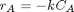
Material balance is applied to the system to generate the dynamic model for the system. The tank levels are assumed to stay constant because of the overflow nozzle and hence there is no level control involved.
For details about this plant, see Example 3.3 in Chapter 3 of "Process Control: Design Processes and Control systems for Dynamic Performance" by Thomas E. Marlin.
EQUATIONS
We have the following differential equations to describe component balances:
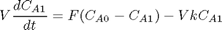
At steady state, from
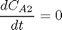
we have the following material balances:
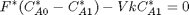
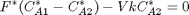
where variables with * denote steady state values.
By substituting the following design specifications and reactor parameters,
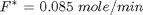
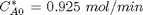

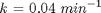
we obtain the steady state values of the concentrations in two reactors:
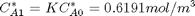
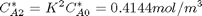
where
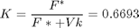
CONTROL OBJECTIVE
The outlet concentration of reactant from the second reactor CA2 should be maintained by the molar flowrate of the reactant F entering the first reactor in the presence of disturbance in feed concentration CA0.
In this control design problem, the plant model is
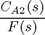
and the disturbance model is
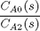
In the next section we will discuss how these two models are obtained.
Linear Plant Models
This chemical process can be represented in the following diagram with LTI blocks.
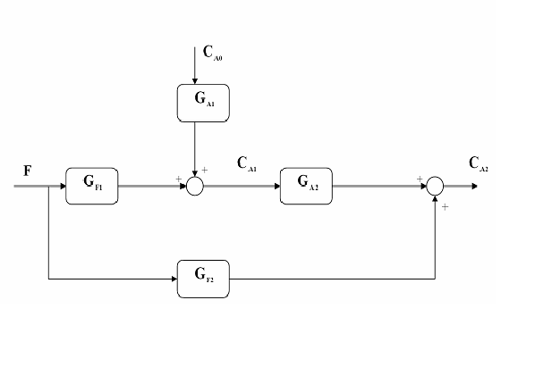
where
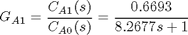
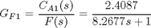
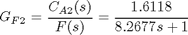
Based on the block diagram, the plant and disturbance models are obtained as follows:
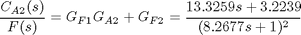
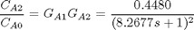
IMC Design with Automatic Tuning
We will now design the compensator in an IMC structure in SISO Design Tool.
Step 1: Open SISO Design Tool
At the MATLAB® command prompt, type sisotool and the Controls and Estimation Tools Manager opens.

Step 2: Select IMC as the Control Architecture
- Click on the Control Architecture... button
- Select Configuration 5 for IMC structure from the left panel in the Control Architecture dialog.

- Click OK to select this configuration. The Controls and Estimation Tools Manager should look like the following figure
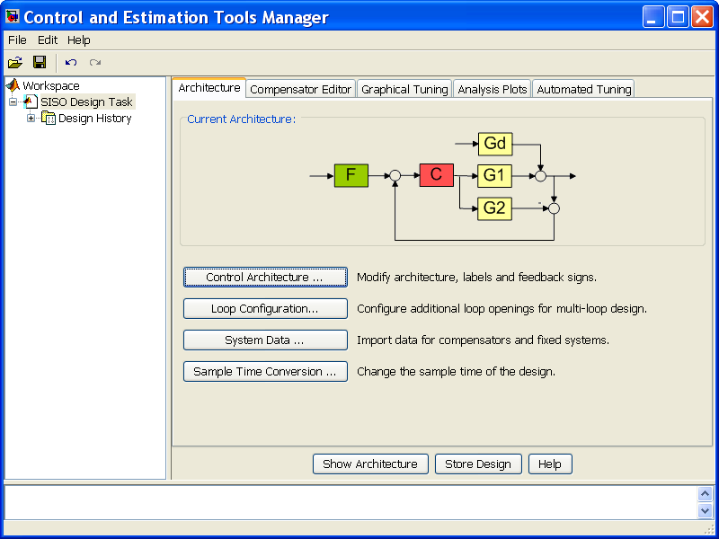
Step 3: Load System Data into SISO Design Tool
First we create the following LTI models in MATLAB command prompt:
s = tf('s');
G1 = (13.3259*s+3.2239)/(8.2677*s+1)^2;
G2 = G1;
Gd = 0.4480/(8.2677*s+1)^2;
Note: G1 is the real plant used in controller evaluation; G2 is an approximation of the real plant and it is used as the predictive model in the IMC structure. G1 = G2 means that there is no model mismatch. Gd is the disturbance model.
Then we load the system data into the Controls and Estimation Tools Manager by clicking on the System Data... button. The System Data Dialog should look like what is shown below after G1, G2 and Gd are specified in the Data column:
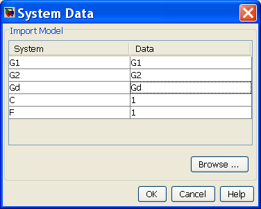
Step 4: Tune the IMC Compensator C
The open loop step response of G1 is shown below:
step(G1)
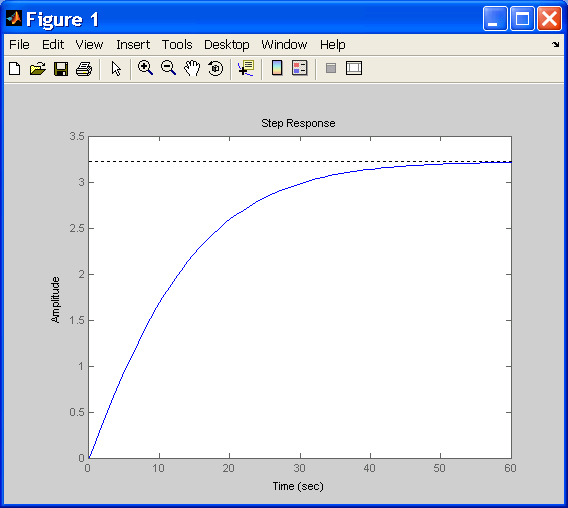
Right-click on the plot and select the Characteristics -> Rise Time submenu. Finally, click on the blue dot marker. The resulting plot is shown below:
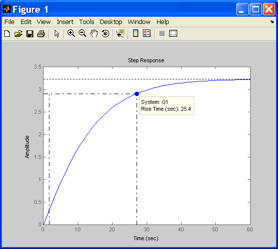
The step plot shows the rise time is about 25 seconds and we want the closed loop response becomes faster after the IMC compensator is tuned.
To tune the IMC compensator, click on the Automated Tuning on the Controls and Estimation Tools Manager and select Internal Model Control (IMC) Tuning as the design method. It should appear like the diagram shown below:
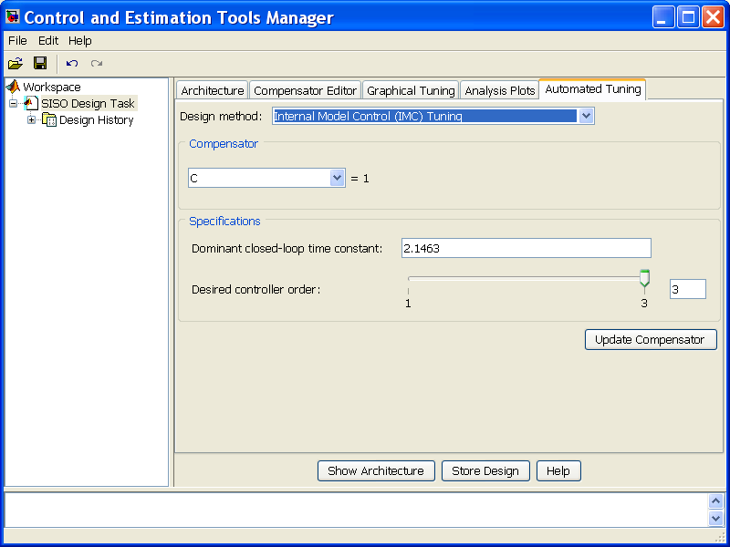
Select a closed-loop time constant of 2 and specify 2 as the desired compensator order. Click on the Update Compensator button to obtain the IMC compensator C.
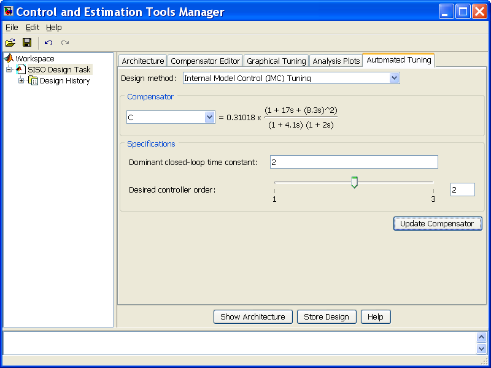
Step 5: Check Closed Loop Step Response
To look at the closed loop step response, click on the Analysis Plots on the Controls and Estimation Tools Manager, select Step as the plot type for Plot 1 and make Closed Loop r to y as the content of Plot 1:
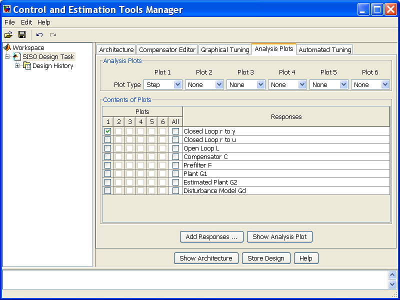
The step response plot looks like:
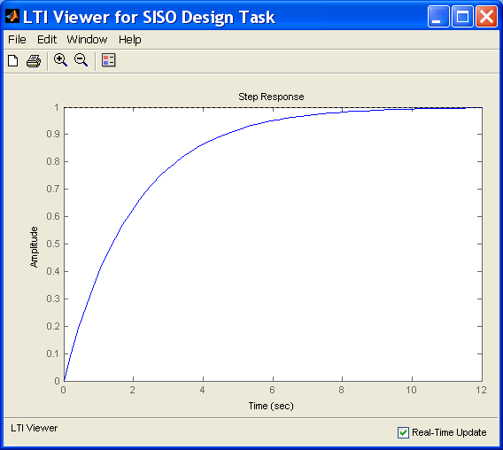
Control Performance with Model Mismatch
In the previous section, we assume G1 is equal to G2. In practice they are often different and the controller needs to be robust enough to track setpoints and reject disturbances. In this section we will change the real plant G1 but keep the predictive model G2 and IMC compensator C untouched.
We will create model mismatches between G1 and G2 and re-examine control performance in MATLAB command prompt with the presence of both set point change and load disturbance.
Step 1: Export IMC Compensator C from SISO Design Tool to MATLAB Workspace
Go to the File menu of the Controls and Estimation Tools Manager and select Export... menu item. It opens the SISO Tool Export dialog:
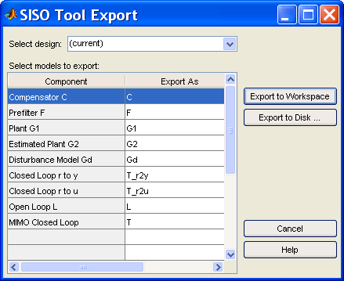
Select Compensator C and click on the Export to Workspace button. An LTI object C is shown up in MATLAB workspace afterwards.
Step 2: Convert IMC Structure to Classic Feedback Control Structure
IMC structure can be converted into a classic feedback control structure with the controller in the feedforward path and unit feedback. The new controller C_new is obtained as follows:
C = zpk([-0.121 -0.121], [-0.242, -0.466], 2.39); C_new = feedback(C,G2,+1)
Zero/pole/gain:
2.39 (s+0.121)^4
---------------------------------------------
(s-0.0001594) (s+0.121) (s+0.1213) (s+0.2419)
Step 3: Define G1 That Differs From G2
So far we assume that G2 was a perfect model of the real plant G1. Now let us consider two possible ways G1 can differ from G2 due to imperfect modeling.
No Model Mismatch (G1 is the same as G2):
G1p = (13.3259*s+3.2239)/(8.2677*s+1)^2;
G1's time constant is changed by 5%:
G1t = (13.3259*s+3.2239)/(8.7*s+1)^2;
G1's gain is increased by 3 times:
G1g = 3*(13.3259*s+3.2239)/(8.2677*s+1)^2;
Step 4: Evaluate Performance of Set-Point Tracking and Load Disturbance Rejection
- Set Point Tracking
step(feedback(G1p*C_new,1),feedback(G1t*C_new,1),feedback(G1g*C_new,1)) legend('No Model Mismatch','Mismatch in Time Constant','Mismatch in Gain')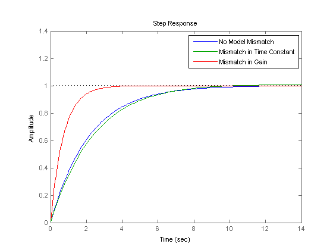
- Load Disturbance Rejection
step(Gd*feedback(1,G1p*C_new),Gd*feedback(1,G1t*C_new),Gd*feedback(1,G1g*C_new)) legend('No Model Mismatch','Mismatch in Time Constant','Mismatch in Gain')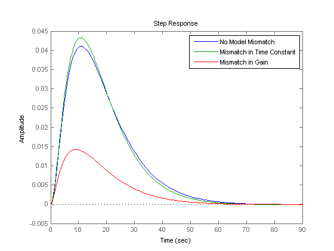
The above figures show that our controller is fairly robust to uncertainties in the plant parameters.